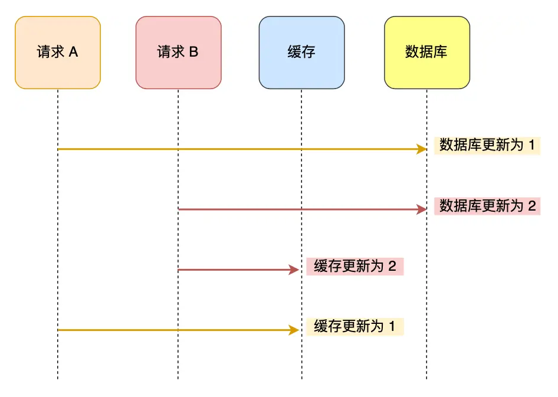
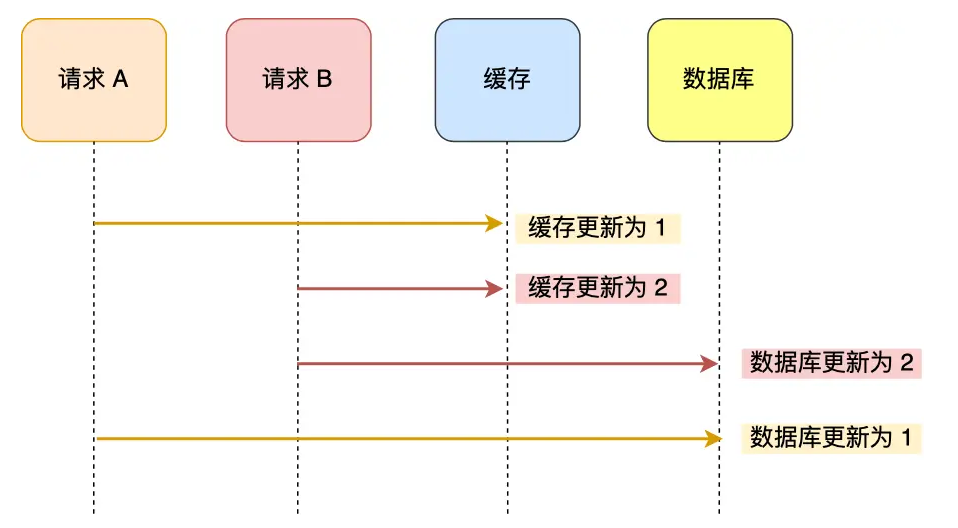
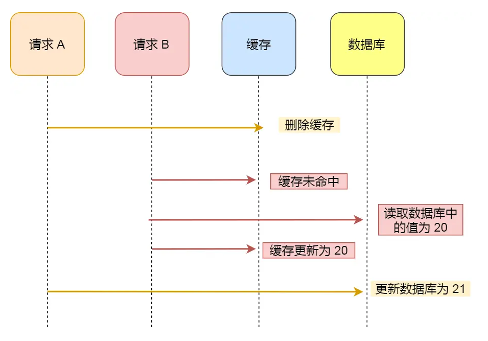
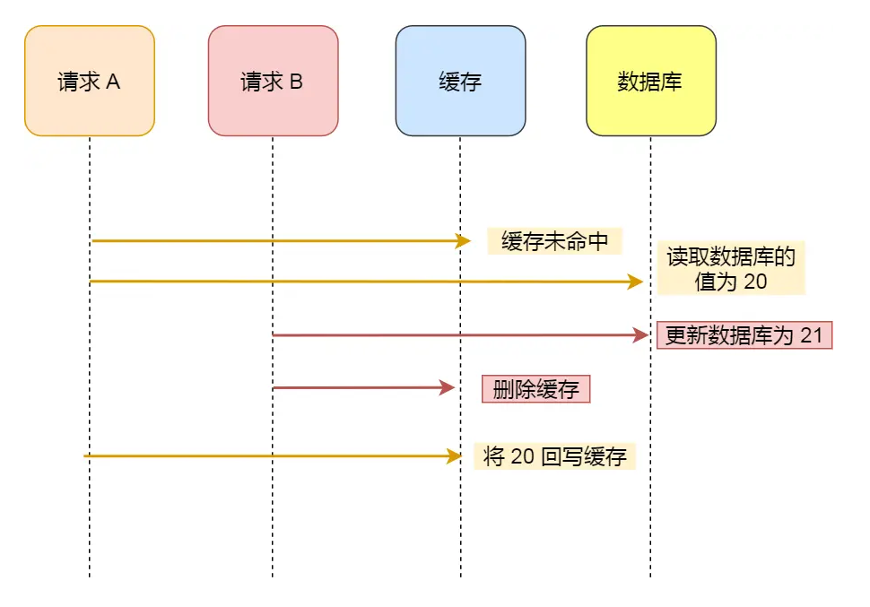

Ch03-缓存与数据库一致性
February 8, 2023
缓存和数据库之间的一致性是指缓存中的数据和数据库中的数据保持一致。当缓存中的数据和数据库中的数据不一致时，就会出现数据不一致的情况，可能会导致应用程序出现错误。
1. 读写锁 #
在读多写少的场景中，可以采用读写锁来保证缓存和数据库之间的一致性。
- 当一个线程要修改数据时，需要获取写锁，其他线程不能读取或修改数据，直到该线程完成修改并释放写锁
- 当一个线程要读取数据时，需要获取读锁，其他线程可以同时读取数据，但不能修改数据
2. 缓存更新策略 #
在写多读少的场景中，可以采用缓存更新策略来保证缓存和数据库之间的一致性。
2.1 先更新数据库，再更新缓存 #

A 请求先将数据库的数据更新为 1，然后在更新缓存前，请求 B 将数据库的数据更新为 2，紧接着也把缓存更新为 2，然后 A 请求更新缓存为 1。此时，数据库中的数据是 2，而缓存中的数据却是 1，出现了缓存和数据库中的数据不一致的现象。
为了解决数据不一致的现象，可以采用 锁 + 过期时间 的方式来解决。
- 在更新缓存前先加个分布式锁，保证同一时间只运行一个请求更新缓存，就会不会产生并发问题了，当然引入了锁后，对于写入的性能就会带来影响。
- 在更新完缓存时，给缓存加上较短的过期时间，这样即时出现缓存不一致的情况，缓存的数据也会很快过期，对业务还是能接受的。
2.2 先更新缓存，再更新数据库 #

A 请求先将缓存的数据更新为 1，然后在更新数据库前，B 请求来了，将缓存的数据更新为 2，紧接着把数据库更新为 2，然后 A 请求将数据库的数据更新为 1。此时，数据库中的数据是 1，而缓存中的数据却是 2，出现了缓存和数据库中的数据不一致的现象。
2.3 先删除缓存，再更新数据库 #

假设某个用户的年龄是 20，请求 A 要更新用户年龄为 21，所以它会删除缓存中的内容。这时，另一个请求 B 要读取这个用户的年龄，它查询缓存发现未命中后，会从数据库中读取到年龄为 20，并且写入到缓存中，然后请求 A 继续更改数据库，将用户的年龄更新为 21。最终，该用户年龄在缓存中是 20（旧值），在数据库中是 21（新值），缓存和数据库的数据不一致。可以看到，先删除缓存，再更新数据库，在「读 + 写」并发的时候，还是会出现缓存和数据库的数据不一致的问题。
为了解决数据不一致的现象，可以采用 延迟双删 的方式来解决。
redis.delKey(X) // 删除缓存
db.update(X) // 更新数据库
Thread.sleep(N) // 睡眠
redis.delKey(X) // 再删除缓存
2.4 先更新数据库，再删除缓存 #
Cache Aside 策略，中文是叫旁路缓存策略。
写策略的步骤
- 更新数据库中的数据；
- 删除缓存中的数据。
读策略的步骤
- 如果读取的数据命中了缓存，则直接返回数据；
- 如果读取的数据没有命中缓存，则从数据库中读取数据，然后将数据写入到缓存，并且返回给用户。

假如某个用户数据在缓存中不存在，请求 A 读取数据时从数据库中查询到年龄为 20，在未写入缓存中时另一个请求 B 更新数据。它更新数据库中的年龄为 21，并且清空缓存。这时请求 A 把从数据库中读到的年龄为 20 的数据写入到缓存中。最终，该用户年龄在缓存中是 20（旧值），在数据库中是 21（新值），缓存和数据库数据不一致。
从上面的理论上分析，先更新数据库，再删除缓存也是会出现数据不一致性的问题，但是在实际中，这个问题出现的概率并不高。
因为缓存的写入通常要远远快于数据库的写入，所以在实际中很难出现请求 B 已经更新了数据库并且删除了缓存，请求 A 才更新完缓存的情况。而一旦请求 A 早于请求 B 删除缓存之前更新了缓存，那么接下来的请求就会因为缓存不命中而从数据库中重新读取数据，所以不会出现这种不一致的情况。
所以，「先更新数据库 + 再删除缓存」的方案，是"可以"保证数据一致性的。如果再给缓存加上「过期时间」，就算在这期间存在缓存数据不一致，有过期时间来兜底，这样也能达到最终一致。
如何保证「先更新数据库，再删除缓存」这两个操作能执行成功？
- 重试机制 引入消息队列，将第二个操作（删除缓存）要操作的数据加入到消息队列，由消费者来操作数据。
- 订阅 binlog，再操作缓存 通过订阅 binlog 日志，拿到具体要操作的数据，然后再执行缓存删除。
3. 数据库通知机制 #
在写多读少的场景中，可以采用数据库通知机制来保证缓存和数据库之间的一致性。
当数据库中的数据被修改时，可以向缓存发送通知，告知缓存中的数据已经过期，需要重新从数据库中读取数据。这种方式可以避免缓存中的数据和数据库中的数据不一致。